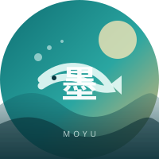

城市水彩计划
画 100 张城市速写，记录街角、菜市场、旧楼和那些很容易被忽略的小店。

FRIEND PROFILE · 003
画画、做饭与胡思乱想。
我是墨鱼，一个住在成都的插画师，画水彩，也做饭。
喜欢把日常里很小的东西画下来：早市上堆成小山的番茄、雨天窗台上的光、旅行途中吃到的一碗面。画得慢，但很喜欢这种慢慢把颜色铺开的过程。
这个主页是我的生活手记，也是作品集。更新不固定，但每次都会认真画完；偶尔也会写食谱、旅行路线和失败很多次才成功的家常菜。
“先把今天过好，再把它画下来。”
画 100 张城市速写，记录街角、菜市场、旧楼和那些很容易被忽略的小店。
把每周做过的饭画成小卡片，附上食谱和失败记录，目标是“一个人也好好吃饭”。
沿着海岸线走走停停，用速写和照片记录城市、食物和遇到的人。
一套以海岛为主题的 12 张插画日历，从潮汐、渔村和晚霞里找颜色。
买了一套最便宜的水彩，画坏了第一张天空，然后决定继续画下去。
开始带着本子出门，画菜市场、旧街和雨后的巷子。
把做饭和画画放在一起，终于找到了自己最喜欢的记录方式。
把作品、食谱和旅行速写收进同一个主页，继续慢慢更新。
这是墨鱼手记的示例好友主页；联系方式与项目信息为演示内容，可自行替换。